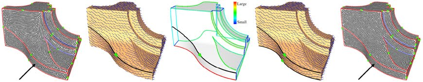

The Source Code of Curve Orientation
Overview
This page maintains the source code of Curve Orientation, the core part of our Feature-Aligned Shape Texturing paper.
Curve orientation problem statement: Given a set of curves on a 3D surface, each represented as a sequence of vertices connected by edges, we wish to assign an orientation to the tangent vector at each vertex, so that a vector field that interpolates these oriented tangents is as smooth as possible. Please refer the details of our algorithm to the paper.
Downloads
Compilation (see also readme.txt included in the package)
Usage (see also readme.txt included in the package)
Acknowledgement
We thank the providers of the following libraries/source codes: 1) CGAL; 2) CHOLMOD; 3) Shin Yoshizawa's crest line extraction program.
Citation & Feedback
Please cite the following papers if you use the source code:
This page maintains the source code of Curve Orientation, the core part of our Feature-Aligned Shape Texturing paper.

Curve orientation problem statement: Given a set of curves on a 3D surface, each represented as a sequence of vertices connected by edges, we wish to assign an orientation to the tangent vector at each vertex, so that a vector field that interpolates these oriented tangents is as smooth as possible. Please refer the details of our algorithm to the paper.
Downloads
- Source Code (MeshStudio MSVC++ 2005 project) (fast_code.zip, 5KB)
- CHOLMOD includes and libs compiled on Windows XP (cholmod.zip, 10KB)
- A wrapper of CHOLMOD matrix and vector (cholmod_wrapper.zip, 4KB)
- Testing Data including
(data.zip, 3.0MB): Mesh model (fandisk.obj); Crest lines output by Shin
Yoshizawa's crest line extraction program (ravines_fandisk.txt and
ridges_fandisk.txt); Processed crest lines with both random
(fandisk_rand.ccl) and optimized orientation (fandisk_opt.ccl); Vector
field (fandisk_opt.shvf) generated with the optimized orientation.
Compilation (see also readme.txt included in the package)
- To compile the MSVC++ project, you need to first install CGAL (e.g., version 3.3). In the following, I use $(CGALROOT) to refer to the root directory of CGAL.
- The computation of harmonic vector field uses CHOLMOD, so you also need to include and link the CHOLMOD stuff. All you need is to copy the the headers in "cholmod.zip(\include)" into "$(CGALROOT)\auxiliary\cholmod\include\" and the libs in "cholmod.zip(\lib)" into "$(CGALROOT)\auxiliary\cholmod\lib\". The including and linking setting has been set up within the VS project.
- I wrote a wrapper class for CHOLMOD matrix and vector (but not including the solver APIs) which you can find in "cholmod_wrapper.zip". Copy the two *.h files into "$(CGALROOT)\include\CGAL\".
Usage (see also readme.txt included in the package)
- I wrote a wrapper class
for CHOLMOD matrix and vector (but not including the solver APIs) which
you can find in
"cholmod_wrapper.zip". Copy the two *.h files into "$(CGALROOT)\include\CGAL\". - Run: You can perform orientation at any time, no matter which type of data you have loaded. The corresponding vector field will also be computed.
- Output: You can save the
resulted vector field into file (*.shvf).
Acknowledgement
We thank the providers of the following libraries/source codes: 1) CGAL; 2) CHOLMOD; 3) Shin Yoshizawa's crest line extraction program.
Citation & Feedback
Please cite the following papers if you use the source code:
- Kai Xu, Daniel Cohen-Or, Tao Ju, Ligang Liu, Hao Zhang, Shizhe Zhou, and Yueshan Xiong, "Feature-Aligned Shape Texturing," ACM Transactions on Graphics (SIGGRAPH Aisa 2009), 28(5).
- Kai Xu, Hao Zhang, Daniel Cohen-Or, and Yueshan Xiong, "Dynamic Harmonic Fields for Surface Processing," Computers and Graphics (Special Issue of Shape Modeling International 2009), Vol. 33, pp. 391-398.